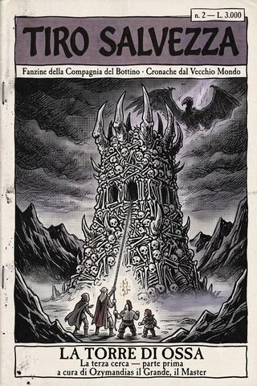

Numero I
I pirati del Talabec
Numero uno della fanzine della Compagnia del Bottino: le prime due cerche del gruppo per il conte Darian I di Talabecland — pirati goblin sul fiume e sangue di troll — raccolte e commentate dal loro Master.

Numero II
La torre di ossa
Numero due della fanzine della Compagnia del Bottino: la terza cerca porta il gruppo in Sylvania, la contrada dei morti, e in una torre fatta di ossa che si prende cinque compagni e regala, in cambio, i doni avvelenati di un dio del Caos. Parte prima.

Numero III
Il principe delle sabbie
Numero tre della fanzine della Compagnia del Bottino: la seconda parte della cerca in Sylvania. Un principe morto da tremila anni offre un patto, un conte morto da uno offre il suo fascino, e il registro dei morti arriva a otto — uno dei quali se ne va camminando.

Numero IV
La diplomazia elfica
Numero quattro della fanzine della Compagnia del Bottino: un'ambasceria a Ulthuan, uno zoo di animali inutili, un museo di cere troppo somiglianti, due nani venduti come spie, e un portale che sbaglia clamorosamente indirizzo. Il numero in cui, per una volta, non muore nessuno.

Numero V
L'invasione di Ulthuan
Numero cinque della fanzine della Compagnia del Bottino: il portale li ha portati a Nagarythe, la terra degli elfi oscuri, dove due di loro erano nati. Un'amica passa al nemico, tre nani tornano rifatti da una forgia crudele, e alla fine gli alti elfi cancellano a tutti la memoria. Il numero che i suoi protagonisti non ricordano.